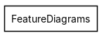
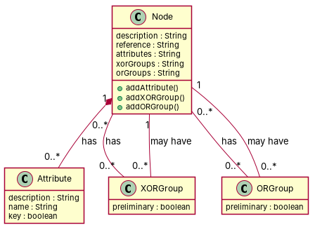

R1: A node has a description and and object, both of type string R2: An attribute has three attributes description and name (String), and key (boolean). R3: Feeature diagrams have a root. R4: A feature diagrams (may) have children R5: An XORGroup has one attribute : preliminary, which is a boolean. R6: An ORGRoup has an attribute that is a boolean and is called preliminary. R7: A node is composed of any number of attributes R8: A node may have/reference to one or many XORGroup R9: An attribute has a node. COmpulsory. R10: A child may have some nodes. R11: A child may have some ORGroup R12: AN XORGroup may have a node R13: AN ORGroup may have a node
Red, struck-through: removed by ambiguity removal; green: added.
| actors (0 → 0) |
|---|
| classes (4 → 2) |
|---|
| Child |
| Node |
| Orgroup |
| Xorgroup |
| attributes (2 → 2) |
|---|
| Node.description |
| Node.reference |
| relations (4 → 1) |
|---|
| has: Child -> Node |
| has: Child -> Orgroup |
| has: Orgroup -> Node |
| has: Xorgroup -> Node |
| id | req | type | cue | status | readings / explanation |
|---|---|---|---|---|---|
| A1 | R7 | quantifier | any | resolved | a node is composed of one attribute; a node is composed of multiple attributes The term 'any number' is ambiguous and could mean one or many attributes. |
| A2 | R8 | quantifier | one or many | resolved | a node may have one XORGroup; a node may have multiple XORGroups The term 'one or many' is ambiguous and could mean one or multiple XORGroups. |
| A3 | R10 | quantifier | some | resolved | a child may have some nodes; a child may have no nodes The term 'some' is ambiguous and could mean zero or more nodes. |
| A4 | R11 | quantifier | some | resolved | a child may have some ORGroups; a child may have no ORGroups The term 'some' is ambiguous and could mean zero or more ORGroups. |


"""Code skeleton generated from the shared model of D2/FeatureDiagrams.
Every class and method records the requirement(s) it traces to."""
from __future__ import annotations
import dataclasses as _dc
import enum as _enum
import typing as _t
@_dc.dataclass
class Node:
"""Source: R1, R7, R9, R10, R11, R12, R13"""
description: _t.Optional[str] = None
reference: _t.Optional[str] = None
attributes: _t.Optional[str] = None
xorGroups: _t.Optional[str] = None
orGroups: _t.Optional[str] = None
xORGroups: _t.List["XORGroup"] = _dc.field(default_factory=list)
oRGroups: _t.List["ORGroup"] = _dc.field(default_factory=list)
def addAttribute(self) -> None:
"""Operation."""
raise NotImplementedError
def addXORGroup(self) -> None:
"""Operation."""
raise NotImplementedError
def addORGroup(self) -> None:
"""Operation."""
raise NotImplementedError
@_dc.dataclass
class Attribute:
"""Source: R2, R9"""
description: _t.Optional[str] = None
name: _t.Optional[str] = None
key: _t.Optional[bool] = None
@_dc.dataclass
class XORGroup:
"""Source: R5, R8, R12"""
preliminary: _t.Optional[bool] = None
node: _t.Optional["Node"] = None
@_dc.dataclass
class ORGroup:
"""Source: R6, R11, R13"""
preliminary: _t.Optional[bool] = None
node: _t.Optional["Node"] = None
| python_compiles | True |
|---|---|
| java_compiles | True |
| attribute_mismatches | 0 |
| method_mismatches | 0 |
| use_cases | 0 |
| use_cases_without_actor | 0 |
| use_cases_without_method | 0 |
| actors_without_use_case | 0 |
| relations_to_unknown_class | 0 |
| inconsistencies | 0 |
| inconsistency_rate | 0.0 |
| requirement_coverage | 0.8462 |
| validator fixes | |
| assumptions for open ambiguities | [{"tag": "A3", "assumption": "Assuming 'Node' is the root of 'FeatureDiagram'"}] |
| element | P | R | F1 | TP/FP/FN |
|---|---|---|---|---|
| classes | 1.0 | 0.667 | 0.8 | 4/0/2 |
| attributes | 0.6 | 0.5 | 0.545 | 6/4/6 |
| relations | 1.0 | 0.429 | 0.6 | 3/0/4 |
| relations_strict | 1.0 | 0.375 | 0.545 | 3/0/5 |